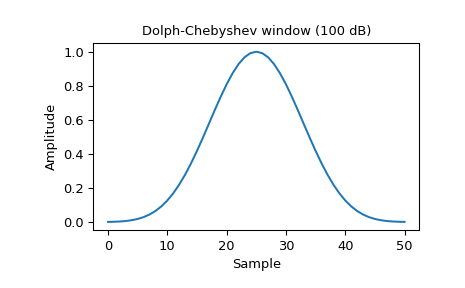
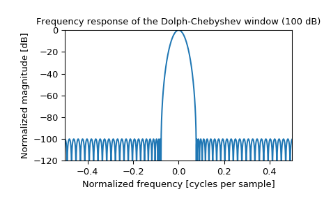

scipy.signal.windows.chebwin¶
-
scipy.signal.windows.chebwin(M, at, sym=True)[source]¶ Return a Dolph-Chebyshev window.
- Parameters
- Mint
Number of points in the output window. If zero or less, an empty array is returned.
- atfloat
Attenuation (in dB).
- symbool, optional
When True (default), generates a symmetric window, for use in filter design. When False, generates a periodic window, for use in spectral analysis.
- Returns
- wndarray
The window, with the maximum value always normalized to 1
Notes
This window optimizes for the narrowest main lobe width for a given order M and sidelobe equiripple attenuation at, using Chebyshev polynomials. It was originally developed by Dolph to optimize the directionality of radio antenna arrays.
Unlike most windows, the Dolph-Chebyshev is defined in terms of its frequency response:
\[W(k) = \frac {\cos\{M \cos^{-1}[\beta \cos(\frac{\pi k}{M})]\}} {\cosh[M \cosh^{-1}(\beta)]}\]where
\[\beta = \cosh \left [\frac{1}{M} \cosh^{-1}(10^\frac{A}{20}) \right ]\]and 0 <= abs(k) <= M-1. A is the attenuation in decibels (at).
The time domain window is then generated using the IFFT, so power-of-two M are the fastest to generate, and prime number M are the slowest.
The equiripple condition in the frequency domain creates impulses in the time domain, which appear at the ends of the window.
References
- 1
C. Dolph, “A current distribution for broadside arrays which optimizes the relationship between beam width and side-lobe level”, Proceedings of the IEEE, Vol. 34, Issue 6
- 2
Peter Lynch, “The Dolph-Chebyshev Window: A Simple Optimal Filter”, American Meteorological Society (April 1997) http://mathsci.ucd.ie/~plynch/Publications/Dolph.pdf
- 3
F. J. Harris, “On the use of windows for harmonic analysis with the discrete Fourier transforms”, Proceedings of the IEEE, Vol. 66, No. 1, January 1978
Examples
Plot the window and its frequency response:
>>> from scipy import signal >>> from scipy.fft import fft, fftshift >>> import matplotlib.pyplot as plt
>>> window = signal.chebwin(51, at=100) >>> plt.plot(window) >>> plt.title("Dolph-Chebyshev window (100 dB)") >>> plt.ylabel("Amplitude") >>> plt.xlabel("Sample")
>>> plt.figure() >>> A = fft(window, 2048) / (len(window)/2.0) >>> freq = np.linspace(-0.5, 0.5, len(A)) >>> response = 20 * np.log10(np.abs(fftshift(A / abs(A).max()))) >>> plt.plot(freq, response) >>> plt.axis([-0.5, 0.5, -120, 0]) >>> plt.title("Frequency response of the Dolph-Chebyshev window (100 dB)") >>> plt.ylabel("Normalized magnitude [dB]") >>> plt.xlabel("Normalized frequency [cycles per sample]")
